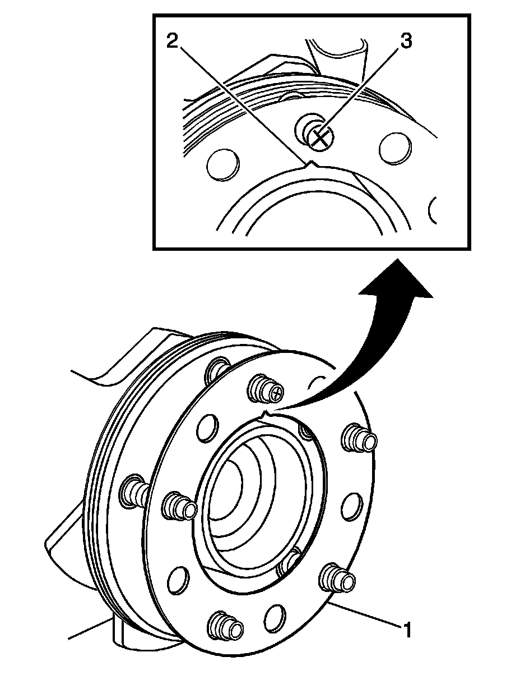

Brake Rotor Assembled Lateral Runout Correction - Correction Plates
Brake Rotor Assembled Lateral Runout Correction - Correction Plates
Tools Required
* J 39544-KIT Complete Torque Socket Set-10 Pieces, or equivalent
* J 45101-100 Conical Brake Rotor Washers
Caution: Refer to Brake Dust Caution (Brake Dust Caution) .
Important:
* Brake rotor thickness variation MUST be checked BEFORE checking for assembled lateral runout (LRO). Thickness variation exceeding the maximum acceptable level can cause brake pulsation. Refer to Brake Rotor Thickness Variation Measurement (Brake Rotor Thickness Variation Measurement) .
* Brake rotor assembled LRO exceeding the maximum allowable specification can cause thickness variation to develop in the brake rotor over time, usually between 4 800-11 300 km (3,000-7,000 mi). Refer to Brake Rotor Assembled Lateral Runout Measurement (Brake Rotor Assembled Lateral Runout Measurement) .

1. Rotate the brake rotor to position the high spot, identified and marked during the brake rotor assembled LRO measurement procedure, to face upward.
2. Remove the J 45101-100 and the lug nuts that were installed during the assembled LRO measurement procedure and/or the indexing correction procedure.
3. Inspect the mounting surface of the hub/axle flange and the brake rotor to ensure that there are no foreign particles or debris remaining.
4. Select the correction plate, following the manufacturer's instructions, which has a specification closest to the assembled LRO measurement.
For example: If the assembled LRO measurement was 0.076 mm (0.003 in), the 0.076 mm (0.003 in) correction plate would be used. If the measurement was 0.127 mm (0.005 in), the 0.152 mm (0.006 in) correction plate would be used.
5. Determine the positioning for the correction plate (1) using the high spot mark (3) made during the brake rotor assembled LRO measurement procedure.
Important:
* Do NOT install used correction plates in an attempt to correct brake rotor assembled LRO.
* Do NOT stack up, or install more than one correction plate onto one hub/axle flange location, in an attempt to correct brake rotor assembled LRO.
6. Install the correction plate (1) onto the hub/axle flange, with the V-shaped notch (2) orientated to align with the high spot mark (3), that was positioned to face upward.

7. Install the brake rotor to the hub/axle flange. Use the matchmark made prior to removal for proper orientation to the flange.
8. Hold the rotor firmly in place against the hub/axle flange and install one of the J 45101-100 (1) and one lug nut (2) onto the upper-most wheel stud.
9. Continue to hold the rotor secure and tighten the lug nut firmly by hand.

10. Install the remaining J 45101-100 and lug nuts onto the wheel studs and tighten the nuts firmly by hand in a star-pattern.
11. Using the J 39544-KIT , or equivalent, tighten the lug nuts in a star-pattern to specification, in order to properly secure the rotor. Refer to Tire and Wheel Removal and Installation (Service and Repair) .
12. Measure the assembled LRO of the brake rotor. Refer to Brake Rotor Assembled Lateral Runout Measurement (Brake Rotor Assembled Lateral Runout Measurement) .
13. If the brake rotor assembled LRO measurement still exceeds the maximum allowable specification, refer to Brake Rotor Assembled Lateral Runout Correction (Service and Repair) .
14. If the brake rotor assembled LRO measurement is within specification, install the brake caliper and depress the brake pedal several times to secure the rotor in place before removing the J 45101-100 and the lug nuts.